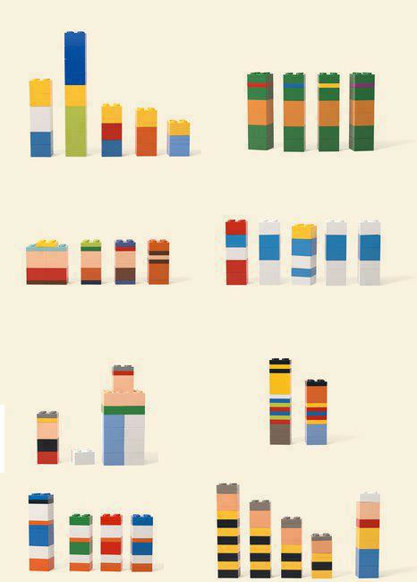

Enseignement
J’enseigne au sein du département ASI de l’INSA Rouen Normandie. Les supports de conférences et de tutoriels sont sur la page Présentations.
Cours
-
Machine Learning Avancée
ITI 5Ce cours aborde les méthodes avancées d’apprentissage statistique, la parcimonie et les problèmes d’optimisation associés, ainsi que des algorithmes efficaces pour les résoudre, dont les Tabular foundation models.
-
Réseaux de neurones profonds (Deep Learning)
Introduction aux réseaux de neurones profonds. Le dépôt GitHub contient les diapositives, du code Python et deux notebooks Jupyter.
-
STAT : science des données pour l’ingénieur
2e année INSA RouenIntroduction à la science des données pour l’ingénieur : méthodes de base en statistique et mise en œuvre informatique.
-
MATRICES : méthodes numériques pour l’ingénieur
3e année, département ASIMéthodes numériques pour l’ingénieur (calcul matriciel).
-
OPTIM : optimisation pour l’ingénieur
4e année, département ASIOptimisation pour l’ingénieur, avec un support sur l’optimisation pour l’apprentissage statistique.
-
Machine learning and SVM
5e année, département ASICours sur les séparateurs à vaste marge (SVM, support vector machines).
-
Understanding SVM (and associated kernel machines) through the development of a Matlab toolbox
DoctorantsCours en anglais sur les séparateurs à vaste marge et les machines à noyaux, construit autour de l’écriture d’une boîte à outils Matlab.
Les liens « Moodle INSA » demandent un compte de l’INSA.
Cours plus anciens
- Apprentissage et réseaux de neurones artificiels : estimation de dépendances à partir de données empiriques, pour les étudiants de GM 5 de l’INSA de Rouen.
- Fouille de données et reconnaissance des formes : pour le Master 2 de l’université et de l’INSA de Rouen.
- Réseaux de neurones artificiels : dans le programme de spécialité « management des systèmes d’information » de l’ESSEC.
- L’inégalité de Bienaymé-Tchebychev : une page de cours avec une vidéo.
Un petit problème de reconnaissance des formes
